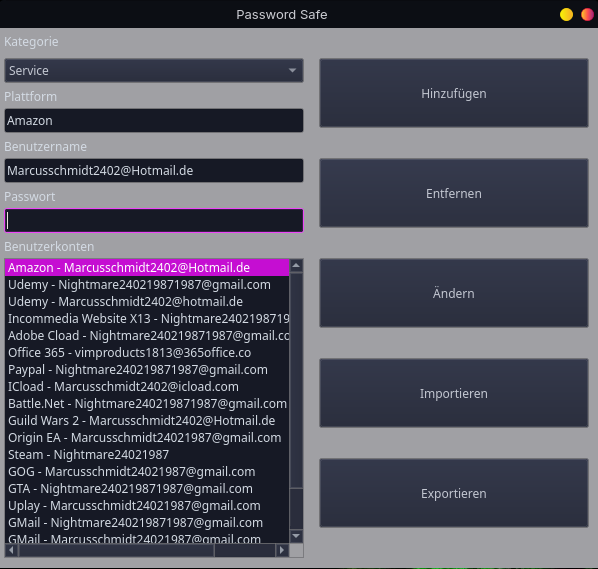
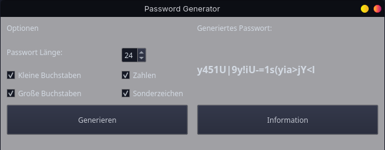

Projekte
Finance Tracker
Programmierspreche : Dart
Technologien : Flutter (UI Framework)
Firebase Auth
Firestore
SharedPreferences
Dieses Programm ist entstanden in der 8-monatigen Weiterbildung, und diente für die Abschlussarbeit.
PassSafe
Programmiersprache : Python
Technologien : Serpent-Verschlüsselung (für Daten),
Sha384-Hash (für Passwort),
Qt5 (Für
UI)
Dieses Programm ist enstanden um meine Passwörter sicher zu Sichern ohne Hintertüren, bedeuted es gibt auch für mich keine möglichkeit die Daten ohne das Passwort wieder herzustellen.
PassGen
Programmiersprache : Python
Technologien : rand bibliothek (für Zufällige Passwörter)
Qt5 (für UI)
Dieses Programm ist neben dem PassSafe Enstanden damit ich sichere Passworter erstellen kann.